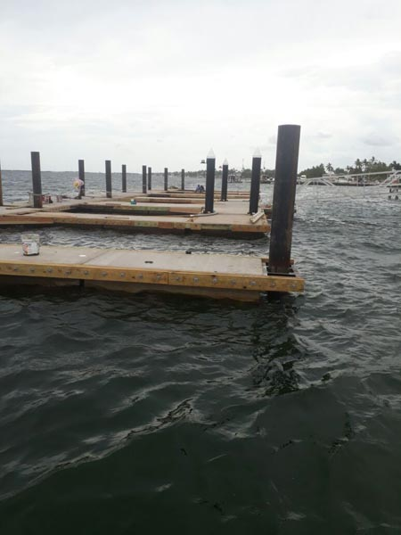
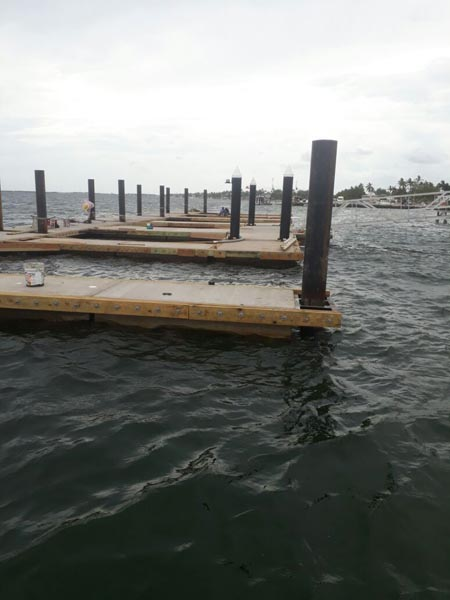

Ventajas
Estas son algunas de las principales ventajas de nuestros flotadores de marina.
-

Speed
Los flotadores de Marina FANOSA® son bloques de Poliestireno Expandido (EPS) cortados a la medida de cada proyecto. Estas piezas son fundamentales en una marina, ya que las propiedades del Poliestireno Expandido (EPS) le proveen flotación, que combinado con el concreto que lo recubre, conforman los muelles para las marinas.
Estas son algunas de las principales ventajas de nuestros flotadores de marina.
You can find all information about our products in downloadable files available for you.
 
